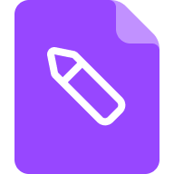

این همان رابط فعلی است با اصلاحاتی که از بازبینی کد به نظرم رسید. همهی رنگها، فونت (Vazirmatn)، آیکونهای رسمی فایل و شکلهای nova از خود اپ گرفته شدهاند؛ فقط ساختار و رفتار تغییر کرده. هر بخش دلیلش را زیر عنوانش نوشتهام.
الان هدر فقط یک فلش بازگشت و نام برگ فعلی دارد. در عمق سه یا بیشتر کاربر نه میبیند کجاست و نه
میتواند به یک سطح بالاتر بپرد. کلید breadcrumb از قبل در هر ۹ زبان تعریف شده و هرگز
رندر نشده — اینجا همان چیزی است که دکمهی AddTeam هم به آن نیاز دارد.

سفارشنامگذاری توکن
دو ایراد همزمان: شمارنده کل انتخابهای تیم را با تعداد فایلهای همین پوشه جمع میزد (۳ از ۱۲)، و
startSelectionBackup هیچ فراخوانیای ندارد — یعنی حالت انتخاب بنبست بود. اینجا شمارنده
فقط همین پوشه را میشمارد، انتخابهای پوشههای دیگر جداگانه اعلام میشود، و دکمهٔ اصلی کار را شروع میکند.
الان بخش «در حال اجرا» شامل ردیفهای failed و stopped هم هست، پس سربرگ میگوید «در حال اجرا ۳» در حالی که
دو تایش شکست خوردهاند. و ردیف فایلِ از-قبل-موجود باز هم «ذخیره شد» میگوید چون
statusExists و statusRenamed در هر ۹ زبان هست و استفاده نشده. اینجا سه بخش
مجزا و کپشنهایی که میگویند واقعاً چه اتفاقی افتاده.
برای دانلود تکفایل، queueProgressPercent تا لحظهٔ پایان_run صفر میماند چون
liveDone صفر است و total برابر ۱ — یعنی یک دانلود ۴۰ ثانیهای با نواری که
۰٪ است نمایش داده میشود. اینجا عدد کنار نوار میآید و برای تکفایل بهجای نوارِ صفر، حالت
نامعیم (نقطههای متحرک) نشان داده میشود.
آنچه در بالا دیدید، به زبان کد:
| تغییر | جای کد | چرا |
|---|---|---|
| بردکراب ناوبریجدید | App.jsx:1059 |
فلش بازگشت تنها جایگزین مسیر شد؛ در عمق چند، کاربر موقعیت و پرش به سطح بالاتر را ندارد. |
| دکمهٔ «پشتیبانگیری N مورد»جدید | App.jsx:611 |
startSelectionBackup تعریف شده ولی هرگز صدا زده نمیشود؛ حالت انتخاب امروز بنبست است. |
| شمارندهٔ همدامنهرفع اشکال | App.jsx:1085 |
selCount کل تیم است و total فقط پوشهٔ جاری؛ نتیجه «۳ از ۱۲» گمراهکننده است. |
| بخش «نیازمند توجه»جدید | App.jsx:697 |
ردیف شکستخورده زیر عنوان «در حال اجرا» خوانده میشود که «دارم رویش کار میکنم». |
| کپشن صادقانهجدید | App.jsx:862 |
فایلِ از-قبل-موجود «ذخیره شد» میگوید چون size صفر است. کلیدهای statusExists و statusRenamed در ۹ زبان آمادهاند. |
| عدد کنار نوار پیشرفتجدید | App.jsx:1023 |
برای تکفایل، نوار تا پایان_run روی ۰٪ میماند؛ نوارِ بیحرکتِ ۰٪ بدتر از نبودن است. |
min-height ثابت پاپاوررفع اشکال |
App.jsx:1029 |
حالت خالی ۱۶۰px است و با رسیدن ردیف اول پنل زیر اشارهگر جمع میشود. |
| اعلام تغییر مرحله به صفحهخوانجدید | App.jsx:844 |
کپشن هر چند صد میلیثانیه عوض میشود ولی aria-live ندارد؛ کار مهم برنامه بیبازخورد میماند. |
انتقال Spinner به سطح ماژولرفع اشکال |
App.jsx:701 |
هویت تازهٔ کامپوننت در هر رندر، زیردرخت را unmount/remount میکند و focus را میدزدد. |
Intl.NumberFormat یا همان ارقام لاتین میماند.